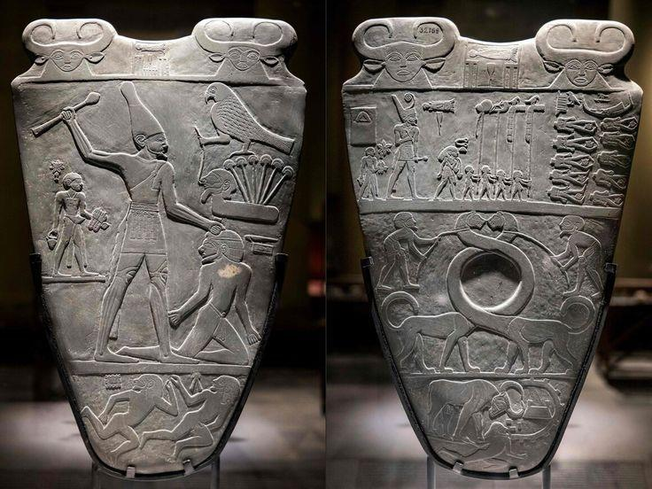
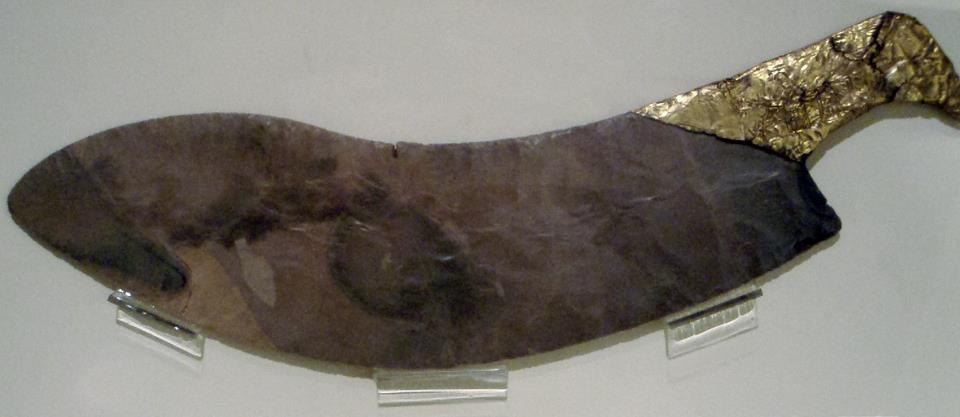
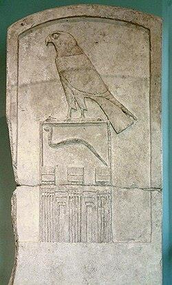
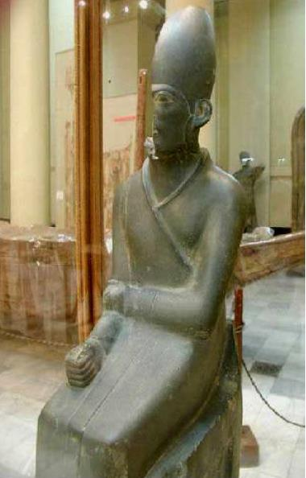

إرهاصات الوحدة: مراحل توحيد البلاد الثماني الكبرى
لم تتأسس الأسرة الأولى وتتحقق الوحدة الشاملة فجأة، بل سبقتها إرهاصات سياسية ومحاولات طويلة تطورت فيها التجمعات السكانية التي ظهرت في العصور الحجرية إلى أقاليم (مقاطعات) يتزعم كل منها رئيس محلي. وقد مرت مصر بثماني مراحل سياسية رئيسية قبل أن تصل إلى وحدتها النهائية الخالدة:
ممالك الدلتا المنفصلة
تجمعت أقاليم الوجه البحري في مملكتين منفصلتين:
- مملكة شرق الدلتا: عاصمتها «عنجت» (بالقرب من سمنود الحالية بمحافظة الغربية).
- مملكة غرب الدلتا: عاصمتها المكان الذي تقوم عليه مدينة «دمنهور» الحالية.
وحدة الدلتا الأولى
اتحدت مملكتا الوجه البحري في مملكة واحدة متكاملة:
- العاصمة: مدينة «ساو / سايس» (صا الحجر الحالية بمركز بسيون - محافظة الغربية).
- المعبودة الحامية: الربة «نيت» (ربة الحرب والنسيج).
- الشعار والتاج: اتخذت من «النحلة» (بيتي) شعاراً، وارتدى زعيمها التاج الأحمر.
وحدة أقاليم الصعيد
بالتزامن مع توحد الدلتا، توحدت أقاليم الصعيد في مملكة جنوبية قوية:
- العاصمة: مدينة «نوبت» (طوخ بمركز نقادة - محافظة قنا).
- المعبود الرئيسي: المعبود «ست» رب القوة والصحراء.
- السمة: شهدت هذه المرحلة قيام علاقات وتبادل تجاري نشط بين مملكتي الشمال والجنوب.
صراع الشمال والجنوب الأول
نشب صراع عسكري عنيف بين مملكتي الصعيد والدلتا:
- انتهى الصراع بـ انتصار الدلتا (الشمال) على الجنوب.
- انتقلت العاصمة إلى شرق الدلتا.
- أصبح المعبود «أوزير» هو المعبود الأكبر للمملكة.
الانفصال وانتكاسة الوحدة
لم تستقر هذه الوحدة المبكرة طويلاً:
- اندلعت ثورات عارمة بين الجنوب والشمال، أسفرت عن انفصال الجنوب وعودته إلى عاصمته القديمة «نوبت».
- المرآة الدينية: تعكس أسطورة الصراع الخالدة بين «أوزير» في الشمال و«ست» في الجنوب جذور هذا الانقسام السياسي التاريخي الحقيقي.
محاولة الوحدة من الشمال وعاصمة «أون»
حاولت مملكة الدلتا توحيد مصر تحت زعامتها مرة أخرى ونجحت في ذلك مؤقتاً:
- اتخذ حكام الدلتا عاصمة جديدة للبلاد الموحدة في مدينة «أون» (عين شمس / المطرية الحالية بالقاهرة).
- كانت أول محاولة لاتخاذ موقع قريب من رأس الدلتا كمركز إداري وسياسي موحد.
عودة الانقسام الثنائي الشهير
تمكن حكام الصعيد من الانفصال مجدداً، لتعود مصر إلى شكلها الكلاسيكي المنقسم إلى مملكتين متنازعتين:
- مملكة الشمال (الدلتا): عاصمتها «بوتو»، والتاج الأحمر، ونبات البردي والنحلة.
- مملكة الجنوب (الصعيد): عاصمتها «نخن / نخب»، والتاج الأبيض، واللوتس وأنثى النسر.
ظهور القادة الموحدين من «ثِني»
نقطة التحول الكبرى في تاريخ الحضارة المصرية:
- انتقال العاصمة الجنوبية إلى مدينة «ثِني» (طينة / قرية البربا بمركز جرجا - محافظة سوهاج).
- من هذه العاصمة خرج أبرز القادة العظام الذين مهدوا وحققوا الوحدة النهائية: الملك العقرب الثاني، والملك العظيم نعرمر (مينا).
مملكة الشمال ومملكة الجنوب في الشكل الكلاسيكي (المرحلة السابعة)
| وجه المقارنة | مملكة الشمال (الوجه البحري / الدلتا) | مملكة الجنوب (الوجه القبلي / الصعيد) |
|---|---|---|
| العاصمة | «بوتو» (تل الفراعين بمحافظة كفر الشيخ) | عاصمة دينية: «نخب» (الكاب - شمال إدفو) عاصمة سياسية: «نخن» (الكوم الأحمر) |
| التاج الملكي | التاج الأحمر (دشرت Deshret) 𓋔 | التاج الأبيض (حدجت Hedjet) 𓋑 |
| المعبود الرئيسي | المعبود «حور» (الصقر)، و«وادجت» ربة الكوبرا | المعبود «حور»، والربة «نخبت» (أنثى النسر) |
| الشعار الحيواني | حشرة «النحلة» (بيتي Bity) 𓆤 | أنثى النسر «نخبت» 𓅐 |
| الشعار النباتي | نبات «البردي» (محيت) 𓇅 | نبات «اللوتس» / نبات «السُّعد» (سو) 𓇓 |
الوحدة وتأسيس الدولة المركزية: الأسرة الأولى والملك نعرمر
⚖️ الجدل الأكاديمي حول المؤسس الحقيقي للأسرة الأولى:
اختلف المؤرخون قديماً وحديثاً حول تحديد المؤسس الحقيقي للأسرة الأولى؛ فمنهم من نسب التأسيس إلى الملك «مينا»، ومنهم من نسبه إلى الملك «نعرمر»، بينما رأى فريق آخر أن الملك «عحا» هو المؤسس الفعلي. والاتجاه العلمي الأرجح يرى أن «مينا» و«نعرمر» و«عحا» قد تكون أسماء وألقاباً وصفات لشخصية تاريخية واحدة. ويُقدّر علماء الآثار الفترة الزمنية لهذه الأسرة بين عامي (٣١٠٠ - ٢٨٥٠ ق.م).
١. الملك نعرمر (مينا) وإنجازاته التأسيسية
تشير روايات المؤرخين الكلاسيكيين — كما ينقلها هيرودوت وديودور الصقلي — إلى أن الملك نعرمر أدرك مبكراً أن العاصمتين القديمتين (نخب في الجنوب، وبوتو في الشمال) لا تلائمان إدارة دولة موحدة، لذلك اختار موقعاً استراتيجياً في نقطة الوسط بين الوجهين البحري والقبلي ليؤسس مدينة «منف» (إنب-حدج / الجدار الأبيض).
من أوائل الملوك الذين أدركوا هندسة الري؛ استغل الملك نعرمر مجرى «بحر يوسف» لصرف مياه فيضان النيل وتوجيهها نحو منخفض الفيوم لاستثمار أراضيها الشاسعة للزراعة وتأمين الغذاء للدولة الوليدة.
يشيد المؤرخ ديودور الصقلي بسياسته الداخلية؛ فلم تقتصر إنجازاته على الحرب، بل نظم الحياة العامة، وسن قواعد عبادة الآلهة، وعلم الشعب فنون تزيين البيوت والموائد بالأقمشة الفاخرة كرمز للاستقرار والرفاهية بعد استتباب الأمن ورعاية الحرف.
لوحة نعرمر الخالدة (صلاية نعرمر)
يُعد هذا الأثر العظيم هو الأبرز الذي خلد ذكريات هذا الملك الموحد. اكتشفها عالم الآثار الإنجليزي «جيمس إدوارد كويبل» (Quibell) عام 1898 في موقع هيراكونبوليس (الكوم الأحمر / نخن القديمة بالصعيد).

لوحة نعرمر بالمتحف المصري بالتحرير (الوجه والظهر)يظهر الملك نعرمر بحجم ضخم مرتدياً التاج الأبيض (تاج الصعيد)، ممسكاً بمقمعته يهم بضرب أسير راكع يمثل الشمال. وفوق الأسير يظهر صقر حورس ممسكاً بحبل يخرج من أنف رأس بشري ينبت من نبات البردي (رمزية إخضاع ٦٠٠٠ أسير من الدلتا).
يظهر الملك نعرمر في الموكب الاحتفالي مرتدياً التاج الأحمر (تاج الدلتا) يسبقه حملة الأعلام ويتفقد جثث الأعداء مقطوعة الرؤوس. وفي الوسط حيوانان أسطوريان تتشابك عنقاهما في رمزية عبقرية لامتزاج وتوحيد القطرين، وأسفلهما ثور قوي يقتحم حصون الأعداء.
تجسد اللوحة التحول التاريخي الأكبر من العصر الحجري وممالك ما قبل الأسرات إلى تأسيس الدولة المركزية الموحدة تحت سلطة ملك مؤله يحكم بمقتضى العدالة الإلهية وحماية حورس وحتحور.
ملوك الأسرة الأولى العظام: جر، جت، ودِن
٢. الملك ِجر (Djer) — حكم نحو ٢٧ عاماً
يُعد الملك «جر» أحد أبرز ملوك الأسرة الأولى وفقاً لتقديرات مانيتون (امتد حكمه نحو 27 عاماً). ولم يكن ابناً للملكة الرئيسية «نيت-حتب» (زوجة نعرمر)، بل كان ابناً لإحدى الزوجات الثانويات وتدعى «حبت»، ورغم ذلك تمكن من اعتلاء العرش وتثبيت أركان حكمه داخلياً وخارجياً:

عُثر في مقابر الملك على مجوهرات وأساور وأختام وتمائم فاخرة، وأشهرها سكين ذو تصميم منحني محفوظ بمتحف تورنتو بكندا؛ صُنع من مادة الفخار وطُلي بالذهب الخالص وحمل نقوشاً تتضمن اسم الملك.
٣. الملك ِجت (Djet) — عصر الكمال الفني
يمتاز عهد الملك «جت» بالوصول إلى درجة استثنائية من الكمال الفني والجمالي، وهو ما انعكس بوضوح على الآثار والمقتنيات التي عُثر عليها في مقبرته بأبيدوس بجوار سلفه جر:

لوحة الملك جت الشهيرة بمتحف اللوفر بباريس٤. الملك دِن (وديمو Den) — أعظم وأقوى ملوك الأسرة الأولى
ترك الملك «دِن» (المعروف أيضاً بـ وديمو: حافر الترع أو واهب الماء) بصمات سياسية وحضارية استثنائية شكلت التقاليد الملكية المصرية لقرون لاحقة:
هو أول ملك يستحدث اللقب الملكي الخالد «نيسو - بيتي» (nsw-bity)، والذي يعني حرفياً «المنتمي لنبات السُّعد/الجنوب، ونحلة الشمال» أي ملك الوجهين القبلي والبحري، وهو اللقب الرسمي الذي اعتمده ملوك مصر حتى نهاية التاريخ المصري القديم.
يُعد الملك «دِن» أول من أجرى إحصاءً دقيقاً لموارد البلاد في تاريخ البشرية؛ ورجح المؤرخون (مثل د. عبد العزيز صالح) أنه كان إحصاءً شاملاً للأراضي الزراعية والمناجم وللماشية لتقدير الجلود، وربما إحصاءً للسكان.
يرى د. سليم حسن أنه أول ملك فكر في تنظيم مياه فيضان النيل بمنطقة الفيوم، وعمل على تحصين المدن وتأمين التجارة، ويُسجل له أنه أول من أسس نظام «الأوقاف» للإنفاق المستدام على المعابد الدينية.
قاد حملة كبرى لتأديب بدو سيناء وتأمين مناجم الفيروز، فظهر استخدام حجر الجرانيت لأول مرة في مقبرته بأبيدوس. وهو أول ملك يُسجل له الاحتفال بـ عيد الحب-سد (العيد الثلاثيني) لتجديد حيويته وطاقته لحكم البلاد.
اكتشفت بعثة المعهد الفرنسي للآثار الشرقية (IFAO) مركباً خشبياً جنائزياً يعود لعهده، بالجهة الشمالية من «المصطبة رقم 6» بجبانة العصر العتيق بمنطقة أبو رواش بالجيزة. وُجد المركب بحالة حفظ جيدة، ويتكون من 11 لوحاً من الأخشاب المحلية، مما يثبت رسوخ عقيدة دفن المراكب الجنائزية لاستخدام المتوفى في التنقل بالعالم الآخر منذ عهد دن.
الأسرة الثانية (حتب سخموي، نب رع، وملوك الاضطرابات)
لا تزال أسباب سقوط الأسرة الأولى غامضة تاريخياً، كما أن الفروق بين البيتين المالكين (للأسرتين الأولى والثانية) غير واضحة المعالم. ويذكر المؤرخ مانيتون أن هذه الأسرة قد حكمها تسعة ملوك، وتاريخها يشوبه الغموض بسبب صراعات سياسية ومذهبية عنيفة:
١. الملك حتب سخموي (Hotepsekhemwy)
- دلالة الاسم: يُترجم اسمه إلى «القوتان تهدأن» أو «مُهدئ القوتين» (إشارة إلى الشمال والجنوب، أو المعبودين حورس وست)، وهو اسم ذو دلالة سياسية بالغة لإخماد الفتن بعد اضطرابات نهاية الأسرة الأولى.
- كارثة زلزال بوباستيس: يذكر مانيتون حدثاً مأساوياً بانشقاق أرضي كبير في «تل بسطة» بالشرقية ابتلع عدداً كبيراً من السكان. وتؤكد الدراسات الجيولوجية الحديثة تعرض المنطقة بالفعل لاضطرابات زلزالية قديمة مما يمنح رواية مانيتون مصداقية علمية قوية.
٢. الملك نب رع (رع نب / كا-كاو)
- الظهور الأول لعقيدة رع: يُعد أول اسم ملكي في التاريخ يقترن بإله الشمس «رع»، كما عُرف في القوائم الملكية باسم «كا - كاو».
- تقنين عبادة العجول: يذكر مانيتون أن عهده شهد البداية الرسمية لتقنين عبادة وتأليه العجول المقدسة بمصر، وعلى رأسها العجل أبيس في منف.
- الآثار وطرق التجارة: وُجدت أختام باسمه في الدهاليز السفلية قرب هرم أوناس بسقارة، كما نُقش اسمه على صخرة بطريق تجاري قديم خلف «أرمنت» يؤدي للواحات الغربية.
الملك خع سخموي والملكة ني ماعت حب (جسر الانتقال للدولة القديمة)
تُختتم الأسرة الثانية بفترة سياسية حاسمة؛ برز فيها اسمان: «خع سخم» و«خع سخموي». ويرى فريق واسع من المؤرخين أنهما اسمان لشخصية واحدة: بدأ حكمه باسم «خع سخم» (القوة تظهر)، وبعد نجاحه في القضاء على الفتن الطاحنة وإعادة توحيد البلاد غير اسمه إلى «خع سخموي» (القوتان تظهران / تشرقان) ليعبر عن تصالح الشمال والجنوب وتآلف حورس وست معاً فوق سرخه الملكي.

تمثال الملك خع سخموي بالمتحف المصري بالتحرير (الكوم الأحمر)الملكة «ني ماعت حب» (جسر العبور إلى بناة الأهرام)
تزوج الملك خع سخموي من الملكة الشهيرة «ني ماعت حب»، وتُعد هذه الملكة الشخصية المحورية في الانتقال التاريخي العظيم من العصر العتيق إلى الدولة القديمة. فقد أكدت النقوش (ومنها إناء عُثر عليه في أبيدوس) أنها حملت لقب «الأم الملكية» باعتبارها الأم أو الجدة المؤسسة لملوك الأسرة الثالثة (أم الملك زوسر).
مذكرة المرشد السياحي الميدانية: شروحات العصر العتيق والآثار
شرح لوحة نعرمر أمام السائحين بالمتحف المصري
عند وقوفك أمام صلاية نعرمر بالتحرير، وجّه نظر الفوج أولاً إلى التيجان: الملك على الوجه الأول يرتدي التاج الأبيض (رمز الصعيد) ويضرب أسير الدلتا، وعلى الوجه الثاني يرتدي التاج الأحمر (رمز الدلتا) في موكب النصر. اشرح لهم أن هذا الأثر هو شهادة ميلاد الدولة الموحدة عام 3100 ق.م قبل أهرامات الجيزة بقرابة 500 عام!
دلالة لقب «نيسو - بيتي» في الخراطيش الملكية
عند زيارة أي معبد مصري، انبه السائحين للرمزين 𓇓𓆤 اللذين يسبقان اسم التتويج في الخرطوش. اشرح لهم أن نبات السُّعد يمثل الجنوب والنحلة تمثل الشمال، وأن هذا اللقب ابتكره الملك «دِن» في الأسرة الأولى ليؤكد أن الفرعون ليس حاكماً عادياً بل ضامن وحدة القطرين للأبد.
المقبرة الحقيقية والمقبرة الرمزية (Cenotaph)
سيسألك السائح الذكي: لماذا نجد مقابر لملوك الأسرة الأولى في أبيدوس وسقارة معاً؟ اشرح له مبدأ «المقبرة الرمزية» (Cenotaph)؛ حيث كانت مقابر سقارة قرب العاصمة منف هي المقابر الفعلية للدفن، بينما مقابر أبيدوس رمزية للتبرك بجوار مرقد الإله أوزير في موطن الأجداد بالصعيد.
تمهيد الانتقال لهرم زوسر المدرج
عند قيادة جولة في سقارة، قارن بين مقبرة خع سخموي غير المنتظمة ونقلة زوسر الهندسية. واشرح دور الملكة «ني ماعت حب» كأم شرعية لزوسر ورابطة الدم التي منحت الأسرة الثالثة الاستقرار لتفجير ثورة البناء الحجري مع الوزير والمهندس إمحوتب.
اختبر فهمك: بنك أسئلة المحاضرة الرابعة التفاعلي
أجب عن الأسئلة التالية للتأكد من استيعابك الكامل لتفاصيل المحاضرة الرابعة:
النتيجة: لم تبدأ بعد